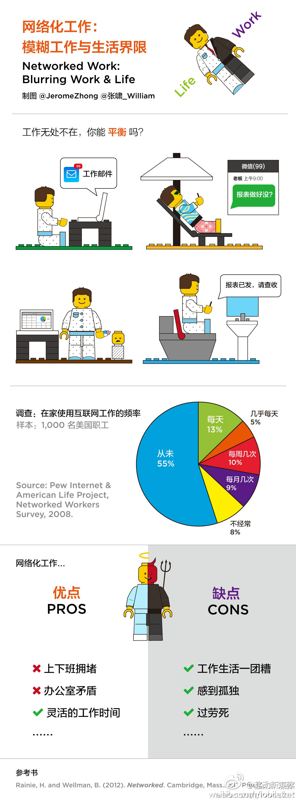

这贴意思是： 在家办公，工作时间会更长？[呵呵]//@葛涵涛:@Ada李力@IT茶馆@物联网那点事:雨天不想出门时,天冷不想起床时,你是不是特别希望能远程在家办公?网络模糊了工作与生活的界限让工作不分时刻,不分地点.但下班回到家时,周末睡懒觉时,工作是不是还阴魂不散?不要成为一个“过劳死”的“远程工作狂”哦@优悦生活官方微博@赛客生活@咕咚网申波@刘一昂_@刘维_联想控股@蒋文创业@乐高中国 